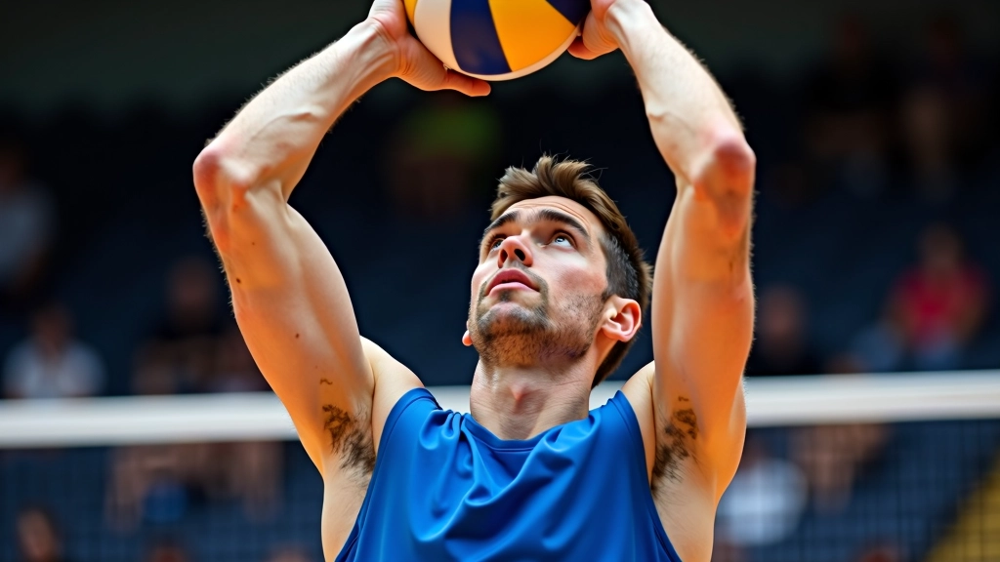
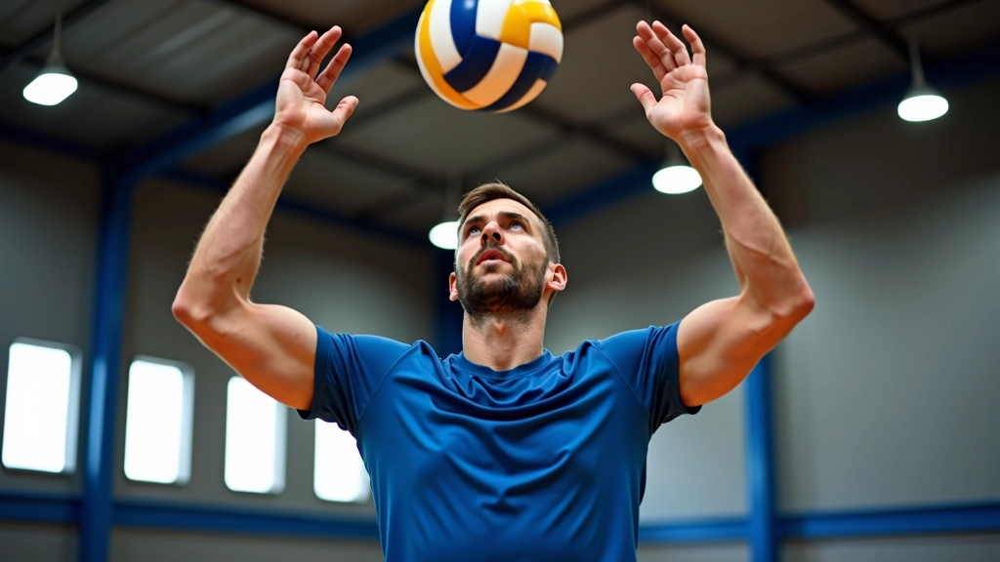
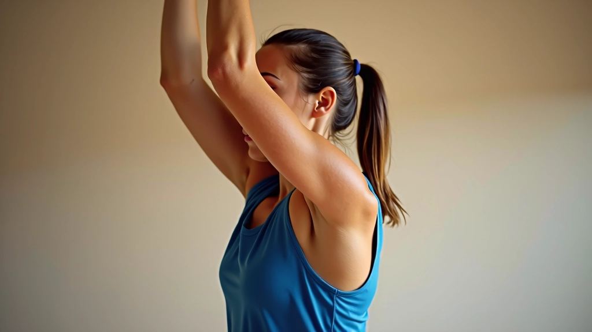
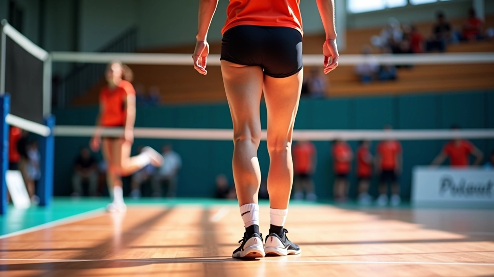
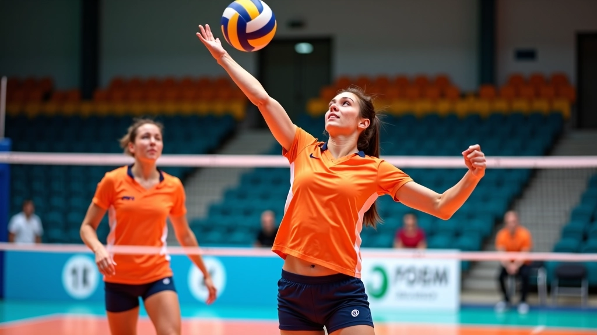
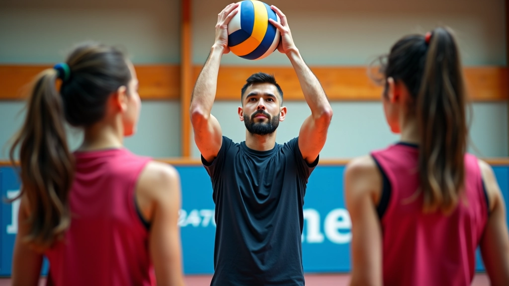
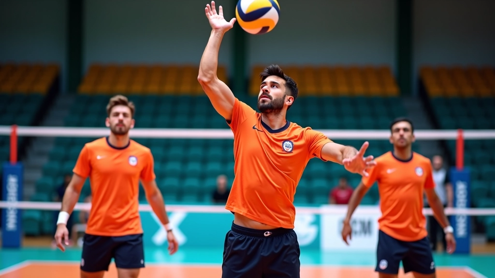

الأساسيات الصحيحة للتمرير العلوي
تعلم وضعية الجسم الصحيحة وحركة اليدين والقدمين التي تشكل أساس التمرير العلوي الفعال
إتقان الحركات المتقدمة والتحكم الدقيق في التمرير العلوي لرفع مستواك التنافسي

الفرق بين اللاعب الجيد والاستثنائي يكون في التفاصيل. عندما تتقن التمرير العلوي الأساسي، حان الوقت للارتقاء بمستواك. التقنيات المتقدمة تتطلب فهماً عميقاً للحركة وتحكماً دقيقاً بالجسم والكرة معاً.
في هذا الدليل، نركز على الحركات التي تستخدمها الفرق التنافسية. نتحدث عن تعديل الزوايا، التحكم بالقوة، والتكيف السريع مع مواقف اللعب المختلفة. ستتعلم كيفية التمرير تحت الضغط، في المساحات الضيقة، ومع اللاعبين في مواقع غير متوقعة.

هذا ليس مجرد تمرير عادي. اللاعب المتقدم يحتاج للتحكم الكامل بزوايا الجسم. عندما تدور كتفاك بـ 45 درجة إلى اليمين أو اليسار، تتحكم بمسار الكرة بدقة. الرسغان يجب أن يكونا مرنين — لا يتحركان بنفس الطريقة في كل مرة.
الفكرة الأساسية: كلما زادت الزاوية، كلما احتجت لقوة أكثر للتعويض. التمرير السريع المستقيم يتطلب كتفين موازيين للشبكة. لكن عندما تريد تمريراً مائلاً أو سريعاً جداً، ستغير موضع الكتفين. هذا يأتي مع الممارسة — حوالي 200 تمرير يومياً لتشعر بالفرق.


وقفة القدمين تحدد كل شيء. في المستوى المتقدم، لا تقف ساكناً. عندما تتوقع الكرة من مكان معين، تبدأ بتحريك قدميك قبل وصول الكرة. هذا يسمح لك بالتمرير من مواقع مختلفة — أمام جسدك، بجانبك، حتى خلفك قليلاً.
القاعدة الذهبية: قدماك يجب أن تكونا بعرض الأكتاف تقريباً. لكن عندما تحتاج لتمريرة سريعة جداً، قد تقرب القدمين قليلاً للاستقرار أكثر. والعكس صحيح — عندما تحتاج مرونة أكبر للتمرير الجانبي، تتسع المسافة قليلاً. التوازن يأتي من النواة — تأكد أن عضلات البطن والظهر قوية.
التوقيت هو كل شيء. اللاعبون المتقدمون يمكنهم تمرير الكرة وهي في طريقها لأسفل — ليس بعد أن تصل لأعلى نقطة. هذا يعطيك وقتاً أقل لكنه أسرع. المدافعون الآخرون لن يكون لديهم وقت للتفاعل.
كيفية التدريب على هذا؟ ابدأ بالتمرير الكلاسيكي حيث تنتظر الكرة لأعلى نقطة. ثم قلل التوقيت تدريجياً — نصف ثانية في كل مرة. بعد أسبوع أو اثنين ستشعر بالفرق. ستحتاج لحوالي 300-400 تمرير مع شريك لإتقان هذا.

نتائج التطور تختلف من لاعب لآخر. يعتمد التقدم على الممارسة المنتظمة والتدريب الموجه من مدرب ذي خبرة. هذا الدليل معلومات تعليمية عامة — استشر مدربك دائماً قبل تجربة تقنيات جديدة.
الآن تعرف على الحركات والتقنيات الأساسية. الخطوة التالية هي التطبيق المستمر. لا تتوقع أن تتقن هذه التقنيات في أسبوع أو حتى شهر واحد. اللاعبون الأفضل في العالم يقضون سنوات في تحسين هذه الحركات.
ركز على جزء واحد في كل مرة. اعمل على زوايا الكتفين لأسبوع كامل. ثم انتقل إلى مواضع القدمين. بعدها التوقيت. عندما تجمع كل هذا معاً، ستلاحظ قفزة حقيقية في أدائك. وستشعر بالفرق — ستتمكن من التمرير بدقة أكثر وسرعة أكبر.

فريق التحرير والمراجعة
كتب بواسطة فريق القمة الرياضية للتدريب المتقدم، متخصصون في تقديم محتوى تدريبي دقيق وسهل التطبيق.
تعلم وضعية الجسم الصحيحة وحركة اليدين والقدمين التي تشكل أساس التمرير العلوي الفعال

اكتشف الأخطاء الأكثر شيوعاً في التمرير العلوي وكيفية تصحيحها بفعالية

برامج تمرينية محددة لتحسين سرعة ودقة التمرير العلوي مع شريك